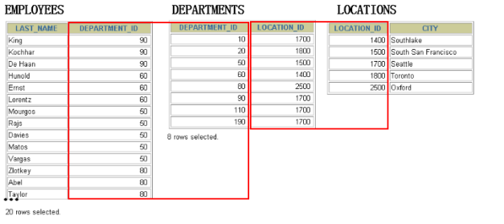
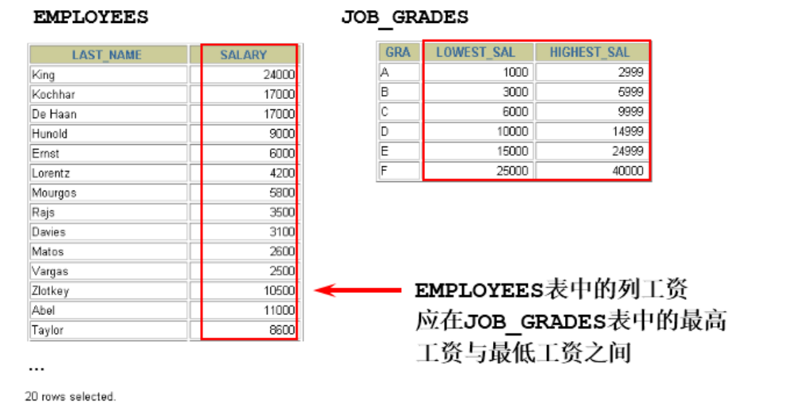
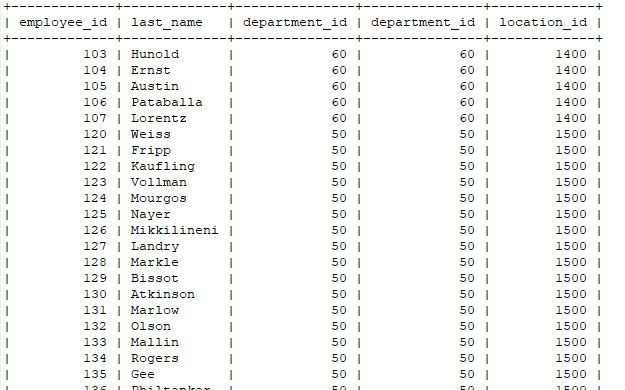
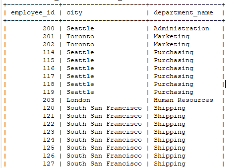
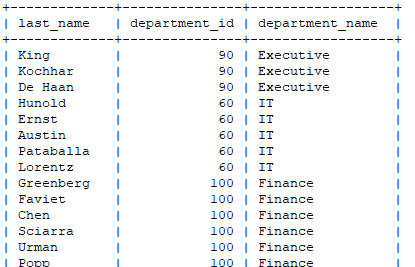
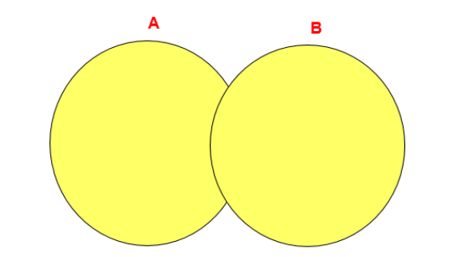
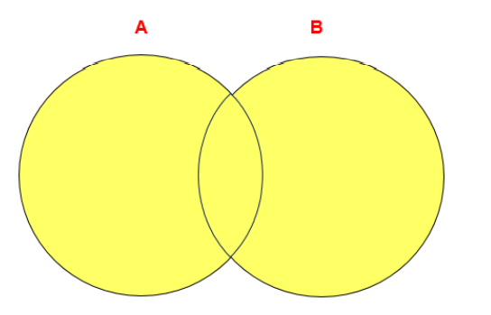
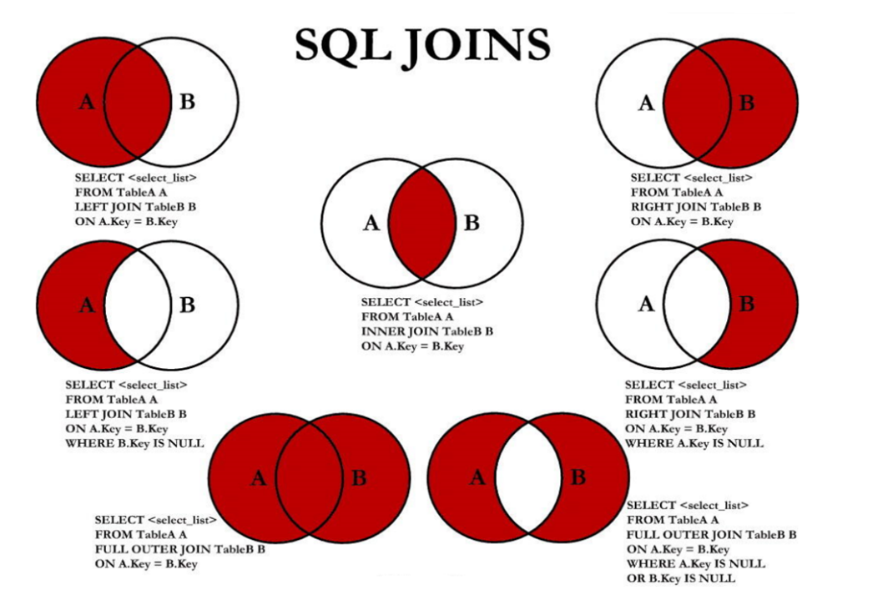

多表查询，也称为关联查询，指两个或更多个表一起完成查询操作。 前提条件：这些一起查询的表之间是有关系的（一对一、一对多），它们之间一定是有关联字段，这个 关联字段可能建立了外键，也可能没有建立外键。比如：员工表和部门表，这两个表依靠“部门编号”进 行关联。
1. 多表查询分类讲解
1. 等值连接
等值连接
SELECT employees.employee_id, employees.last_name,
employees.department_id, departments.department_id,
departments.location_id
FROM employees, departments
WHERE employees.department_id = departments.department_id;
拓展1：多个连接条件与 AND 操作符
拓展2：区分重复的列名
多个表中有相同列时，必须在列名之前加上表名前缀。
在不同表中具有相同列名的列可以用 表名 加以区分。
SELECT employees.last_name, departments.department_name,employees.department_id
FROM employees, departments
WHERE employees.department_id = departments.department_id;
拓展3：表的别名
使用别名可以简化查询
列名前使用表名前缀可以提高查询效率
SELECT e.employee_id, e.last_name, e.department_id,
d.department_id, d.location_id
FROM employees e , departments d
WHERE e.department_id = d.department_id;
需要注意的是，如果我们使用了表的别名，在查询字段中、过滤条件中就只能使用别名进行代替， 不能使用原有的表名，否则就会报错。
阿里开发规范 ：
【 强制 】：对于数据库中表记录的查询和变更，只要涉及多个表，都需要在列名前加表的别名（或表名）进行限定。
【 说明 】：对多表进行查询记录、更新记录、删除记录时，如果对操作列没有限定表的别名（或表名），并且操作列在多个表中存在时，就会抛异常。
【 正例 】 ：select t1.name from table_first as t1 , table_second as t2 where t1.id=t2.id;
【 反例 】 ：在某业务中，由于多表关联查询语句没有加表的别名（或表名）的限制，正常运行两年后，最近在 某个表中增加一个同名字段，在预发布环境做数据库变更后，线上查询语句出现出 1052 异常：Column 'name' in field list is ambiguous。
- 拓展4：连接多个表

总结：连接 n个表,至少需要n-1个连接条件。比如，连接三个表，至少需要两个连接条件。
2. 非等值连接

SELECT e.last_name, e.salary, j.grade_level
FROM employees e, job_grades j
WHERE e.salary BETWEEN j.lowest_sal AND j.highest_sal;
3. 自连接
当table1和table2本质上是同一张表，只是用取别名的方式虚拟成两张表以代表不同的意义。然后两 个表再进行内连接，外连接等查询。
4.内连接和外连接
内连接: 合并具有同一列的两个以上的表的行, 结果集中不包含一个表与另一个表不匹配的行
外连接: 两个表在连接过程中除了返回满足连接条件的行以外还返回左（或右）表中不满足条件的 行 ，这种连接称为左（或右） 外连接。没有匹配的行时, 结果表中相应的列为空(NULL)。
- 如果是左外连接，则连接条件中左边的表也称为
主表，右边的表称为从表。 - 如果是右外连接，则连接条件中右边的表也称为
主表，左边的表称为从表。
2.多表查询实现
1.内连接(INNER JOIN)的实现
SELECT 字段列表
FROM A表 INNER JOIN B表
ON 关联条件
WHERE 等其他子句;
SELECT e.employee_id, e.last_name, e.department_id,
d.department_id, d.location_id
FROM employees e JOIN departments d
ON (e.department_id = d.department_id);

SELECT employee_id, city, department_name
FROM employees e
JOIN departments d
ON d.department_id = e.department_id
JOIN locations l
ON d.location_id = l.location_id;

2.外连接(OUTER JOIN)的实现
2.1 左外连接(LEFT OUTER JOIN)
语法：
#实现查询结果是A
SELECT 字段列表
FROM A表 LEFT JOIN B表
ON 关联条件
WHERE 等其他子句;
举例：
SELECT e.last_name, e.department_id, d.department_name
FROM employees e
LEFT OUTER JOIN departments d
ON (e.department_id = d.department_id) ;

2.2 右外连接(RIGHT OUTER JOIN)
语法：
#实现查询结果是B
SELECT 字段列表
FROM A表 RIGHT JOIN B表
ON 关联条件
WHERE 等其他子句;
举例：
SELECT e.last_name, e.department_id, d.department_name
FROM employees e
RIGHT OUTER JOIN departments d
ON (e.department_id = d.department_id) ;
2.3 满外连接(FULL OUTER JOIN)
- 满外连接的结果 = 左右表匹配的数据 + 左表没有匹配到的数据 + 右表没有匹配到的数据。
- SQL99是支持满外连接的。使用FULL JOIN 或 FULL OUTER JOIN来实现。
- 需要注意的是，MySQL不支持FULL JOIN，但是可以用 LEFT JOIN UNION RIGHT join代替。
3. UNION的使用
合并查询结果 利用UNION关键字，可以给出多条SELECT语句，并将它们的结果组合成单个结果集。合并时，两个表对应的列数和数据类型必须相同，并且相互对应。
各个SELECT语句之间使用UNION或UNION ALL关键字分隔。
语法格式：
SELECT column,... FROM table1
UNION [ALL]
SELECT column,... FROM table2
UNION操作符

UNION 操作符返回两个查询的结果集的并集，去除重复记录。
UNION ALL操作符

UNION ALL操作符返回两个查询的结果集的并集。对于两个结果集的重复部分，不去重。
注意：执行UNION ALL语句时所需要的资源比UNION语句少。如果明确知道合并数据后的结果数据 不存在重复数据，或者不需要去除重复的数据，则尽量使用UNION ALL语句，以提高数据查询的效 率。
举例：查询部门编号>90或邮箱包含a的员工信息
#方式1
SELECT * FROM employees WHERE email LIKE '%a%' OR department_id>90;
#方式2
SELECT * FROM employees WHERE email LIKE '%a%'
UNION
SELECT * FROM employees WHERE department_id>90;
举例：查询中国用户中男性的信息以及美国用户中年男性的用户信息
SELECT id,cname FROM t_chinamale WHERE csex='男'
UNION ALL
SELECT id,tname FROM t_usmale WHERE tGender='male';
3. 七种SQL JOINS的实现

4.1 代码实现
#中图：内连接 A∩B
SELECT employee_id,last_name,department_name
FROM employees e JOIN departments d
ON e.`department_id` = d.`department_id`;
#左上图：左外连接
SELECT employee_id,last_name,department_name
FROM employees e LEFT JOIN departments d
ON e.`department_id` = d.`department_id`;
#右上图：右外连接
SELECT employee_id,last_name,department_name
FROM employees e RIGHT JOIN departments d
ON e.`department_id` = d.`department_id`;
#左中图：A - A∩B
SELECT employee_id,last_name,department_name
FROM employees e LEFT JOIN departments d
ON e.`department_id` = d.`department_id`
WHERE d.`department_id` IS NULL
#右中图：B-A∩B
SELECT employee_id,last_name,department_name
FROM employees e RIGHT JOIN departments d
ON e.`department_id` = d.`department_id`
WHERE e.`department_id` IS NULL
#左下图：满外连接
# 左中图 + 右上图 A∪B
SELECT employee_id,last_name,department_name
FROM employees e LEFT JOIN departments d
ON e.`department_id` = d.`department_id`
WHERE d.`department_id` IS NULL
UNION ALL #没有去重操作，效率高
SELECT employee_id,last_name,department_name
FROM employees e RIGHT JOIN departments d
ON e.`department_id` = d.`department_id`;
#右下图
#左中图 + 右中图 A ∪B- A∩B 或者 (A - A∩B) ∪ （B - A∩B）
SELECT employee_id,last_name,department_name
FROM employees e LEFT JOIN departments d
ON e.`department_id` = d.`department_id`
WHERE d.`department_id` IS NULL
UNION ALL
SELECT employee_id,last_name,department_name
FROM employees e RIGHT JOIN departments d
ON e.`department_id` = d.`department_id`
WHERE e.`department_id` IS NULL
4.2 小结
左中图
#实现A - A∩B
select 字段列表
from A表 left join B表
on 关联条件
where 从表关联字段 is null and 等其他子句;
右中图
#实现B - A∩B
select 字段列表
from A表 right join B表
on 关联条件
where 从表关联字段 is null and 等其他子句;
左下图
#实现查询结果是A∪B
#用左外的A，union 右外的B
select 字段列表
from A表 left join B表
on 关联条件
where 等其他子句
union
select 字段列表
from A表 right join B表
on 关联条件
where 等其他子句;
右下图
#实现A∪B - A∩B 或 (A - A∩B) ∪ （B - A∩B）
#使用左外的 (A - A∩B) union 右外的（B - A∩B）
select 字段列表
from A表 left join B表
on 关联条件
where 从表关联字段 is null and 等其他子句
union
select 字段列表
from A表 right join B表
on 关联条件
where 从表关联字段 is null and 等其他子句
4.课后练习
- 显示所有员工的姓名、部门号和部门名称
SELECT e.last_name,e.department_id,d.department_name
FROM employees e JOIN departments d
ON e.`department_id` = d.`department_id`;
- 查询
90号部门员工的job_id和90号部门员工的location_id
SELECT e.job_id, d.location_id
FROM employees e JOIN departments d
ON e.`department_id` = d.`department_id`
WHERE d.`department_id` = 90;
- 选择所有有奖金的员工的last_name，department_name，location_id，city
SELECT last_name,department_name,location_id,city
FROM employees e LEFT JOIN departments d
ON e.`department_id` = d.`department_id`
LEFT JOIN locations l
ON d.`location_id` = l.`location_id`
WHERE e.`commission_pct` IS NOT NULL;
- 选择city在Toronto工作的员工的last_name，job_id，department_id，department_name
SELECT last_name，job_id，department_id，department_name
FROM employees e JOIN departments d
ON e.`department_id` = d.`department_id`
JOIN locations l
ON d.`location_id` = l.`location_id`
WHERE l.`city` = 'Toronto';
- 查询员工所在的部门名称、部门地址、姓名、工作、工资，其中员工所在部门的部门名称为Executive
SELECT department_name,street_address,last_name,job_id,salary
FROM employees e LEFT JOIN departments d
ON e.`department_id` = d.`department_id`
LEFT JOIN locations l
ON d.`location_id` = l.`location_id`
WHERE d.`department_name` = 'Executive';
选择指定员工的姓名、员工号、他的管理者的姓名、员工号，结果显示如下
employees Emp manager Mgr jack 101 tom 02
SELECT emp.last_name "employees",emp.employee_id "Emp",mgr.last_name "manager",mgr.employee_id "Mgr"
FROM employees emp LEFT JOIN employees mgr
ON emp.manager_id = mgr.employee_id;
- 查询哪些部门没有员工
SELECT d.department_id
FROM departments d LEFT JOIN employees e
ON d.`department_id` = e.`department_id`
WHERE e.`department_id` IS NULL;
- 查询哪个城市没有部门
SELECT l.location_id,l.city
FROM locations l LEFT JOIN departments d
ON l.`location_id` = d.`location_id`
WHERE d.`location` IS NULL;
- 查询部门名为Sales或IT的员工信息
SELECT e.employee_id,e.last_name,e.department_id,d.department_name
FROM employees e JOIN departments d
ON e.`department_id` = d.`department_id`
WHERE d.`department_name` IN ('Sales','IT');